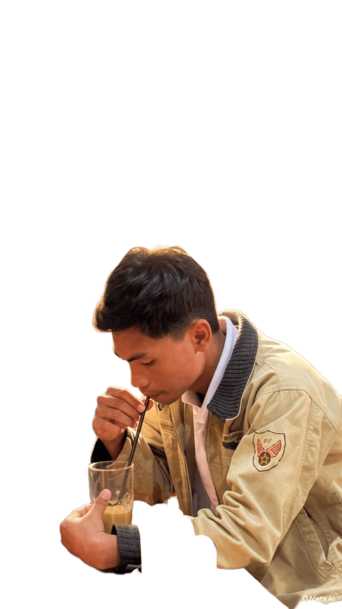
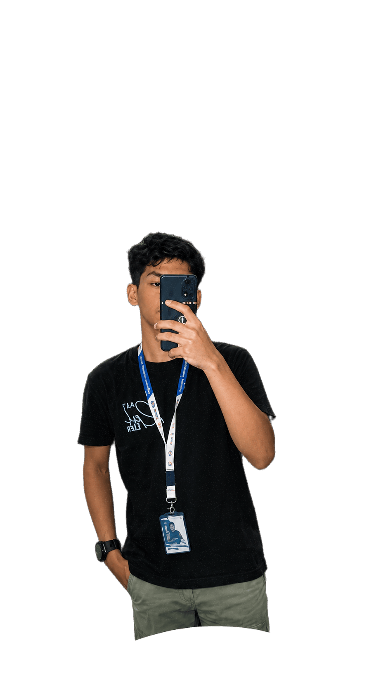

Politeknik Negeri Jember
Jurusan Bisnis, Prodi Bisnis Digital, Jawa Timur, Indonesia.
Business Digital, UI/UX, Web Development, Data Analyst, dan Backend Development. Politeknik Negeri Jember, Jawa Timur.

UI/UX Web Dev Data Analyst Backend
Mahasiswa semester 5 Program Studi Bisnis Digital di Politeknik Negeri Jember dengan latar belakang Rekayasa Perangkat Lunak. Memiliki ketertarikan dalam pengembangan aplikasi berbasis web, pengolahan data, UI/UX, serta penerapan teknologi AI dan machine learning. Terbiasa mengembangkan proyek menggunakan PHP/Laravel, MySQL,Python, serta berbagai teknologi frontend. Memiliki kemampuan dalam merancang sistem, membangun antarmuka aplikasi, mengelola database, dan mengintegrasikan kebutuhan bisnis ke dalam solusi digital.Memiliki ketertarikan untuk berkembang sebagai Web Developer, Data Analyst, atau Digital Technology Specialist.
Mengubah kebutuhan bisnis menjadi solusi digital yang terukur.
Merancang antarmuka yang jelas, konsisten, dan nyaman dipakai.
Membangun situs dan aplikasi web yang responsif.
Mengolah data menjadi wawasan dan visualisasi yang mudah dipahami.
Menyusun API, database, dan logika sisi server.
Gulir untuk memunculkan kartu satu per satu. Klik kartu untuk membaliknya, atau pakai filter dan tombol putar ulang.
Jurusan Bisnis, Prodi Bisnis Digital, Jawa Timur, Indonesia.
Jursan Rekayasa Perangkat Lunak.
yeyy.
Membuat aplikasi mobile BanGo dengna mengunakan bahasa pemprograman Dart dengan Framework Flutter Berperan sebagai Mobile Dev dalam membuat Aplikasi BanGo dalam tim yang terdiri dari 4 anggota Mengimplementasikan Firebase sebgai titik koordinat pengguna secara real time dan menggunakan laravel sebaai backend dalam pengelolaan data mulai dari transaksi, user, mitra, dll.
Mendesain UI/UX website menggunakan Figma dari tahap wireframe hingga prototype Membangun Website dengan menggunakan bahsa pemprograman PHP dengan Framework Laravel dan Bootsrap sebagai UI dinamis Berperan sebagai Web Dev dalam membuat Website Jurusan Bisnis dalam tim yang terdiri dari 4 anggota
Membangun Website dengan menggunakan bahsa pemprograman PHP dengan Framework Laravel dan Filament sebagai dasboard admin yang dinamis. Berperan sebagai Full Stak Dev dalam membuat Website Cemmilz dalam solo tim
• Bertanggung jawab penuh atas pengecekan administrasi kepegawaian mulai dari absensi, menulis surat masuk, hingga print,scan dan edit berkas. • Pekerjaan: Meningkatkan efisiensi penghitungan absensi karyawan dengan Microsoft Excel tools. • Menginput data anggota pantarlih yang telah lulus berisi data diri anggota berupa Nama, NIK, Alamat, tempat & tanggal lahir, No telp, dan data lain menyangkut data diri menggunakan Microsoft Excel
Punya ide atau tawaran proyek? Pilih topik, isi formulir, lalu aplikasi emailmu akan terbuka dengan pesan yang sudah siap dikirim.